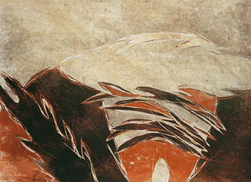

Details
Vernissage: 9. Mai 2003
Eröffnung: Mag. Christian Kvasnicka (Künstler, Direktor des Art Collectors Club des Roten Kreuzes Wien)
Die Ausstellung war bis 21. Juli 2003 zu besichtigen.

Vernissage: 9. Mai 2003
Eröffnung: Mag. Christian Kvasnicka (Künstler, Direktor des Art Collectors Club des Roten Kreuzes Wien)
Die Ausstellung war bis 21. Juli 2003 zu besichtigen.